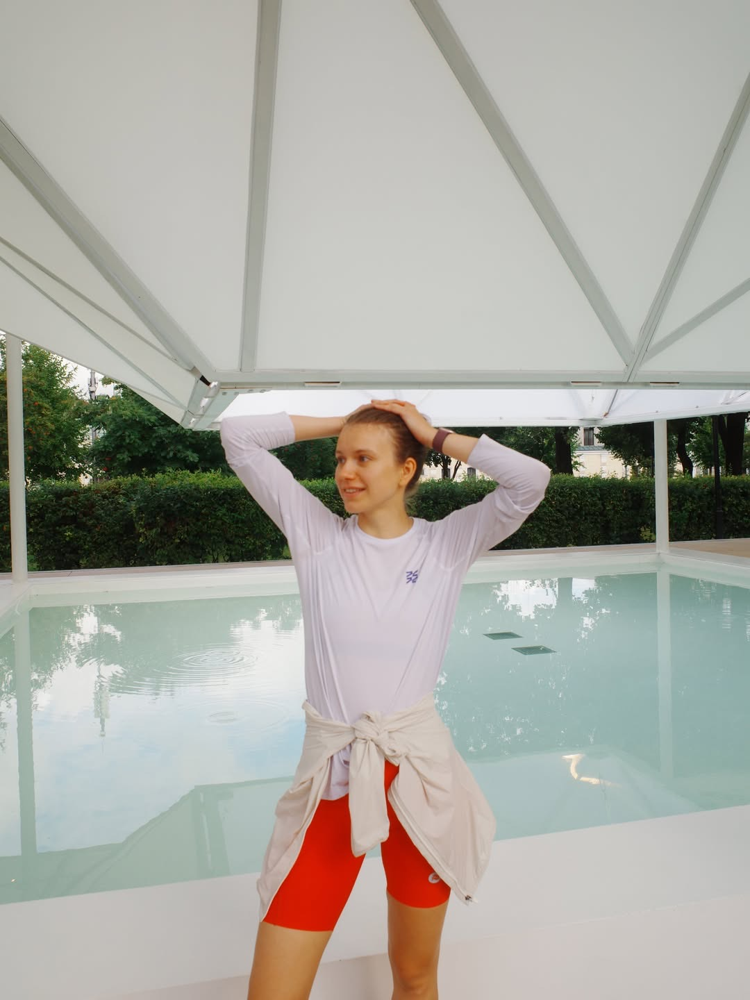

Немного обо мне
Из спринта
в теннис.
12 лет моей жизни были связаны с лёгкой атлетикой. Раньше я бегала спринт. Сегодня играю в теннис и приглашаю вас на тренировки.

Моё обучение
ФТР · ITF Level 1
Прошла курс Федерации тенниса России по программе ITF — по подготовке тренеров игроков начального и среднего уровня.
Посмотреть сертификат